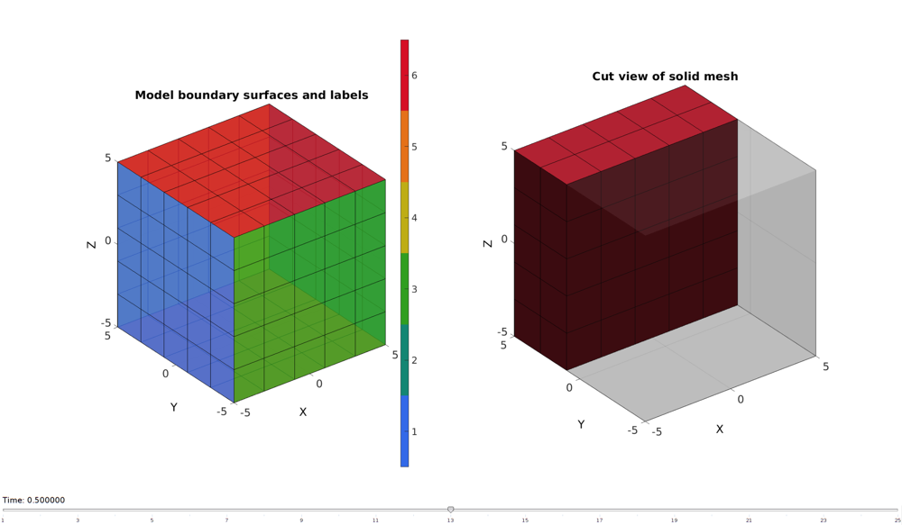
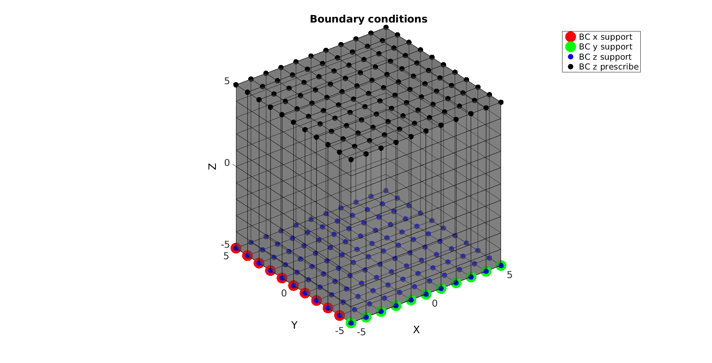
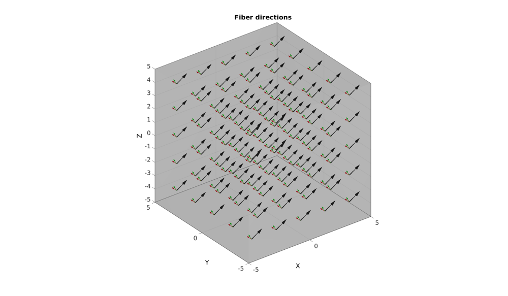
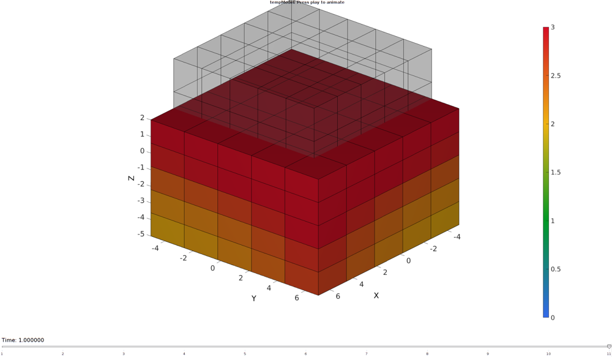
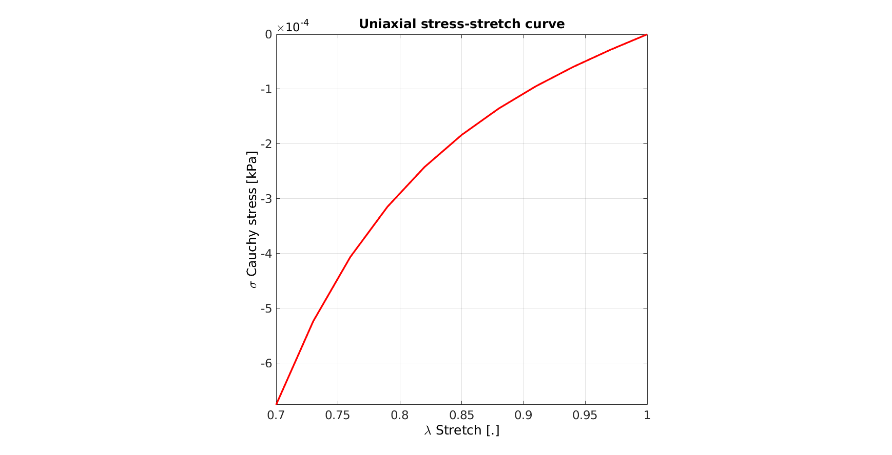

DEMO_febio_0015_cube_fibers_transiso
Below is a demonstration for:
- Building geometry for a cube with hexahedral elements
- Defining the boundary conditions
- Coding the febio structure
- Running the model
- Importing and visualizing the displacement and stress results
Contents
Keywords
- febio_spec version 2.5
- febio, FEBio
- uniaxial loading
- compression, tension, compressive, tensile
- displacement control, displacement boundary condition
- hexahedral elements, hex8
- cube, box, rectangular
- static, solid
- hyperelastic, Ogden
- displacement logfile
- stress logfile
clear; close all; clc;
Plot settings
fontSize=20; faceAlpha1=0.8; markerSize=40; lineWidth=3;
Control parameters
% Path names defaultFolder = fileparts(fileparts(mfilename('fullpath'))); savePath=fullfile(defaultFolder,'data','temp'); % Defining file names febioFebFileNamePart='tempModel'; febioFebFileName=fullfile(savePath,[febioFebFileNamePart,'.feb']); %FEB file name febioLogFileName=fullfile(savePath,[febioFebFileNamePart,'.txt']); %FEBio log file name febioLogFileName_disp=[febioFebFileNamePart,'_disp_out.txt']; %Log file name for exporting force febioLogFileName_force=[febioFebFileNamePart,'_force_out.txt']; %Log file name for exporting force febioLogFileName_stress=[febioFebFileNamePart,'_stress_out.txt']; %Log file name for exporting force %Specifying dimensions and number of elements cubeSize=10; sampleWidth=cubeSize; %Width sampleThickness=cubeSize; %Thickness sampleHeight=cubeSize; %Height pointSpacings=2*ones(1,3); %Desired point spacing between nodes numElementsWidth=round(sampleWidth/pointSpacings(1)); %Number of elemens in dir 1 numElementsThickness=round(sampleThickness/pointSpacings(2)); %Number of elemens in dir 2 numElementsHeight=round(sampleHeight/pointSpacings(3)); %Number of elemens in dir 3 %Define applied displacement appliedStrain=0.3; %Linear strain (Only used to compute applied stretch) loadingOption='compression'; % or 'tension' switch loadingOption case 'compression' stretchLoad=1-appliedStrain; %The applied stretch for uniaxial loading case 'tension' stretchLoad=1+appliedStrain; %The applied stretch for uniaxial loading end displacementMagnitude=(stretchLoad*sampleHeight)-sampleHeight; %The displacement magnitude %Material parameter set c1=1e-3; %Shear-modulus-like parameter m1=12; %Material parameter setting degree of non-linearity of ground matrix ksi=c1*100; beta=3; k_factor=1e3; %Bulk modulus factor alphaFib=1/3*pi; k=0.5.*(c1+ksi)*k_factor; %Bulk modulus % FEA control settings numTimeSteps=10; %Number of time steps desired max_refs=25; %Max reforms max_ups=0; %Set to zero to use full-Newton iterations opt_iter=6; %Optimum number of iterations max_retries=5; %Maximum number of retires dtmin=(1/numTimeSteps)/100; %Minimum time step size dtmax=1/numTimeSteps; %Maximum time step size
Creating model geometry and mesh
A box is created with tri-linear hexahedral (hex8) elements using the hexMeshBox function. The function offers the boundary faces with seperate labels for the top, bottom, left, right, front, and back sides. As such these can be used to define boundary conditions on the exterior.
% Create a box with hexahedral elements cubeDimensions=[sampleWidth sampleThickness sampleHeight]; %Dimensions cubeElementNumbers=[numElementsWidth numElementsThickness numElementsHeight]; %Number of elements outputStructType=2; %A structure compatible with mesh view [meshStruct]=hexMeshBox(cubeDimensions,cubeElementNumbers,outputStructType); %Access elements, nodes, and faces from the structure E=meshStruct.elements; %The elements V=meshStruct.nodes; %The nodes (vertices) Fb=meshStruct.facesBoundary; %The boundary faces Cb=meshStruct.boundaryMarker; %The "colors" or labels for the boundary faces elementMaterialIndices=ones(size(E,1),1); %Element material indices
Plotting model boundary surfaces and a cut view
hFig=cFigure; subplot(1,2,1); hold on; title('Model boundary surfaces and labels','FontSize',fontSize); gpatch(Fb,V,Cb,'k',faceAlpha1); colormap(gjet(6)); icolorbar; axisGeom(gca,fontSize); hs=subplot(1,2,2); hold on; title('Cut view of solid mesh','FontSize',fontSize); optionStruct.hFig=[hFig hs]; meshView(meshStruct,optionStruct); axisGeom(gca,fontSize); drawnow;
Defining the boundary conditions
The visualization of the model boundary shows colors for each side of the cube. These labels can be used to define boundary conditions.
%Define supported node sets logicFace=Cb==1; %Logic for current face set Fr=Fb(logicFace,:); %The current face set bcSupportList_X=unique(Fr(:)); %Node set part of selected face logicFace=Cb==3; %Logic for current face set Fr=Fb(logicFace,:); %The current face set bcSupportList_Y=unique(Fr(:)); %Node set part of selected face logicFace=Cb==5; %Logic for current face set Fr=Fb(logicFace,:); %The current face set bcSupportList_Z=unique(Fr(:)); %Node set part of selected face %Prescribed displacement nodes logicPrescribe=Cb==6; %Logic for current face set Fr=Fb(logicPrescribe,:); %The current face set bcPrescribeList=unique(Fr(:)); %Node set part of selected face
Visualizing boundary conditions. Markers plotted on the semi-transparent model denote the nodes in the various boundary condition lists.
hf=cFigure; title('Boundary conditions','FontSize',fontSize); xlabel('X','FontSize',fontSize); ylabel('Y','FontSize',fontSize); zlabel('Z','FontSize',fontSize); hold on; gpatch(Fb,V,'kw','k',0.5); hl(1)=plotV(V(bcSupportList_X,:),'r.','MarkerSize',markerSize); hl(2)=plotV(V(bcSupportList_Y,:),'g.','MarkerSize',markerSize); hl(3)=plotV(V(bcSupportList_Z,:),'b.','MarkerSize',markerSize); hl(4)=plotV(V(bcPrescribeList,:),'k.','MarkerSize',markerSize); legend(hl,{'BC x support','BC y support','BC z support','BC z prescribe'}); axisGeom(gca,fontSize); camlight headlight; drawnow;
DEFINE FIBRE DIRECTIONS
[R,~]=euler2DCM([0,alphaFib,0]); v_fib=(R*[0 0 1]')'; V_fib=v_fib(ones(size(E,1),1),:); [a,d]=vectorOrthogonalPair(V_fib); [VE]=patchCentre(E,V);
Visualizing fiber directions
hf=cFigure; title('Fiber directions','FontSize',fontSize); hold on; gpatch(Fb,V,'kw','none',0.25); [h]=quiverVec(VE,V_fib,1,'k'); [h]=quiverVec(VE,a,0.5,'r'); [h]=quiverVec(VE,d,0.5,'g'); legend(hl,{'BC x support','BC y support','BC z support','BC z prescribe'}); axisGeom(gca,fontSize); camlight headlight; drawnow;
Defining the FEBio input structure
See also febioStructTemplate and febioStruct2xml and the FEBio user manual.
%Get a template with default settings [febio_spec]=febioStructTemplate; %febio_spec version febio_spec.ATTR.version='2.5'; %Module section febio_spec.Module.ATTR.type='solid'; %Control section febio_spec.Control.analysis.ATTR.type='static'; febio_spec.Control.title='Cube analysis'; febio_spec.Control.time_steps=numTimeSteps; febio_spec.Control.step_size=1/numTimeSteps; febio_spec.Control.time_stepper.dtmin=dtmin; febio_spec.Control.time_stepper.dtmax=dtmax; febio_spec.Control.time_stepper.max_retries=max_retries; febio_spec.Control.time_stepper.opt_iter=opt_iter; febio_spec.Control.max_refs=max_refs; febio_spec.Control.max_ups=max_ups; %Material section febio_spec.Material.material{1}.ATTR.type='uncoupled solid mixture'; febio_spec.Material.material{1}.ATTR.id=1; febio_spec.Material.material{1}.mat_axis.ATTR.type='vector'; febio_spec.Material.material{1}.mat_axis.a=[1 0 0]; febio_spec.Material.material{1}.mat_axis.d=[0 1 0]; febio_spec.Material.material{1}.solid{1}.ATTR.type='Ogden'; febio_spec.Material.material{1}.solid{1}.c1=c1; febio_spec.Material.material{1}.solid{1}.m1=m1; febio_spec.Material.material{1}.solid{1}.c2=c1; febio_spec.Material.material{1}.solid{1}.m2=-m1; febio_spec.Material.material{1}.solid{1}.k=k; febio_spec.Material.material{1}.solid{2}.ATTR.type='fiber-exp-pow-uncoupled'; febio_spec.Material.material{1}.solid{2}.ksi=ksi; febio_spec.Material.material{1}.solid{2}.alpha=1e-20; febio_spec.Material.material{1}.solid{2}.beta=beta; febio_spec.Material.material{1}.solid{2}.theta=0; febio_spec.Material.material{1}.solid{2}.phi=0; febio_spec.Material.material{1}.solid{2}.k=k; %Geometry section % -> Nodes febio_spec.Geometry.Nodes{1}.ATTR.name='nodeSet_all'; %The node set name febio_spec.Geometry.Nodes{1}.node.ATTR.id=(1:size(V,1))'; %The node id's febio_spec.Geometry.Nodes{1}.node.VAL=V; %The nodel coordinates % -> Elements febio_spec.Geometry.Elements{1}.ATTR.type='hex8'; %Element type of this set febio_spec.Geometry.Elements{1}.ATTR.mat=1; %material index for this set febio_spec.Geometry.Elements{1}.ATTR.name='Cube'; %Name of the element set febio_spec.Geometry.Elements{1}.elem.ATTR.id=(1:1:size(E,1))'; %Element id's febio_spec.Geometry.Elements{1}.elem.VAL=E; % -> NodeSets febio_spec.Geometry.NodeSet{1}.ATTR.name='bcSupportList_X'; febio_spec.Geometry.NodeSet{1}.VAL=bcSupportList_X(:); febio_spec.Geometry.NodeSet{2}.ATTR.name='bcSupportList_Y'; febio_spec.Geometry.NodeSet{2}.VAL=bcSupportList_Y(:); febio_spec.Geometry.NodeSet{3}.ATTR.name='bcSupportList_Z'; febio_spec.Geometry.NodeSet{3}.VAL=bcSupportList_Z(:); febio_spec.Geometry.NodeSet{4}.ATTR.name='bcPrescribeList'; febio_spec.Geometry.NodeSet{4}.VAL=bcPrescribeList(:); % -> ElementSets febio_spec.Geometry.ElementSet{1}.ATTR.name='elementSetTransiso'; % febio_spec.Geometry.ElementSet{1}.VAL=(1:size(E,1))'; febio_spec.Geometry.ElementSet{1}.elem.ATTR.id=(1:size(E,1))'; %MeshData section % -> ElementData febio_spec.MeshData.ElementData{1}.ATTR.elem_set=febio_spec.Geometry.ElementSet{1}.ATTR.name; febio_spec.MeshData.ElementData{1}.ATTR.var='mat_axis'; % febio_spec.MeshData.ElementData{1}.elem.ATTR.lid=(1:1:size(E,1))'; for q=1:1:size(E,1) febio_spec.MeshData.ElementData{1}.elem{q}.ATTR.lid=q; febio_spec.MeshData.ElementData{1}.elem{q}.a=a(q,:); febio_spec.MeshData.ElementData{1}.elem{q}.d=d(q,:); end %Boundary condition section % -> Fix boundary conditions febio_spec.Boundary.fix{1}.ATTR.bc='x'; febio_spec.Boundary.fix{1}.ATTR.node_set=febio_spec.Geometry.NodeSet{1}.ATTR.name; febio_spec.Boundary.fix{2}.ATTR.bc='y'; febio_spec.Boundary.fix{2}.ATTR.node_set=febio_spec.Geometry.NodeSet{2}.ATTR.name; febio_spec.Boundary.fix{3}.ATTR.bc='z'; febio_spec.Boundary.fix{3}.ATTR.node_set=febio_spec.Geometry.NodeSet{3}.ATTR.name; % -> Prescribe boundary conditions febio_spec.Boundary.prescribe{1}.ATTR.bc='z'; febio_spec.Boundary.prescribe{1}.ATTR.node_set=febio_spec.Geometry.NodeSet{4}.ATTR.name; febio_spec.Boundary.prescribe{1}.scale.ATTR.lc=1; febio_spec.Boundary.prescribe{1}.scale.VAL=1; febio_spec.Boundary.prescribe{1}.relative=1; febio_spec.Boundary.prescribe{1}.value=displacementMagnitude; %Output section % -> log file febio_spec.Output.logfile.ATTR.file=febioLogFileName; febio_spec.Output.logfile.node_data{1}.ATTR.file=febioLogFileName_disp; febio_spec.Output.logfile.node_data{1}.ATTR.data='ux;uy;uz'; febio_spec.Output.logfile.node_data{1}.ATTR.delim=','; febio_spec.Output.logfile.node_data{1}.VAL=1:size(V,1); febio_spec.Output.logfile.node_data{2}.ATTR.file=febioLogFileName_force; febio_spec.Output.logfile.node_data{2}.ATTR.data='Rx;Ry;Rz'; febio_spec.Output.logfile.node_data{2}.ATTR.delim=','; febio_spec.Output.logfile.node_data{2}.VAL=1:size(V,1); febio_spec.Output.logfile.element_data{1}.ATTR.file=febioLogFileName_stress; febio_spec.Output.logfile.element_data{1}.ATTR.data='sz'; febio_spec.Output.logfile.element_data{1}.ATTR.delim=','; febio_spec.Output.logfile.element_data{1}.VAL=1:size(E,1);
Quick viewing of the FEBio input file structure
The febView function can be used to view the xml structure in a MATLAB figure window.
febView(febio_spec); %Viewing the febio file
Exporting the FEBio input file
Exporting the febio_spec structure to an FEBio input file is done using the febioStruct2xml function.
febioStruct2xml(febio_spec,febioFebFileName); %Exporting to file and domNode % febView(febioFebFileName);
Running the FEBio analysis
To run the analysis defined by the created FEBio input file the runMonitorFEBio function is used. The input for this function is a structure defining job settings e.g. the FEBio input file name. The optional output runFlag informs the user if the analysis was run succesfully.
febioAnalysis.run_filename=febioFebFileName; %The input file name febioAnalysis.run_logname=febioLogFileName; %The name for the log file febioAnalysis.disp_on=1; %Display information on the command window febioAnalysis.disp_log_on=1; %Display convergence information in the command window febioAnalysis.runMode='internal';%'internal'; febioAnalysis.t_check=0.25; %Time for checking log file (dont set too small) febioAnalysis.maxtpi=1e99; %Max analysis time febioAnalysis.maxLogCheckTime=3; %Max log file checking time [runFlag]=runMonitorFEBio(febioAnalysis);%START FEBio NOW!!!!!!!!
%%%%%%%%%%%%%%%%%%%%%%%%%%%%%%%%%%%%%%%%%%%%%
--- STARTING FEBIO JOB --- 15-May-2018 16:05:51
===========================================================================
________ _________ _________ __ _________
| |\ | |\ | |\ | |\ / \\
| ____|| | ____|| | __ || |__|| | ___ ||
| |\___\| | |\___\| | |\_| || \_\| | // \ ||
| || | || | || | || __ | || | ||
| ||__ | ||__ | ||_| || | |\ | || | ||
| |\ | |\ | \\ | || | || | ||
| ___|| | ___|| | ___ || | || | || | ||
| |\__\| | |\__\| | |\__| || | || | || | ||
| || | || | || | || | || | || | ||
| || | ||___ | ||__| || | || | \\__/ ||
| || | |\ | || | || | ||
|___|| |________|| |__________|| |__|| \_________//
F I N I T E E L E M E N T S F O R B I O M E C H A N I C S
--- v e r s i o n - 2 . 7 . 0 . 9579 ---
Musculoskeletal Research Laboratory
University of Utah
http://febio.org
FEBio is a registered trademark.
copyright (c) 2006-2018 - All rights reserved
This is the NON-COMMERCIAL version of FEBio or the commercial license
key file could not be found. If you have a key file make sure it is
placed in the same directory as the executable. This version may only
be used for non-commercial purposes as described in the license agreement.
The functionality of this version may be limited compared to the commercial
version. If you wish to obtain a valid commercial license file, please
contact the developers.
===========================================================================
Reading file /mnt/data/MATLAB/GIT/GIBBON/data/temp/tempModel.feb ...SUCCESS!
]0;(0%) tempModel.feb - FEBio 2.7.0.9579
===== beginning time step 1 : 0.1 =====
===== reforming stiffness matrix:
Nr of equations ........................... : 540
Nr of nonzeroes in stiffness matrix ....... : 14670
1
Nonlinear solution status: time= 0.1
stiffness updates = 0
right hand side evaluations = 2
stiffness matrix reformations = 1
step from line search = 1.000000
convergence norms : INITIAL CURRENT REQUIRED
residual 9.089266e+04 2.984128e+00 0.000000e+00
energy 4.545033e+02 2.035814e+00 4.545033e+00
displacement 7.451929e+00 7.451929e+00 7.451929e-06
Reforming stiffness matrix: reformation #1
2
Nonlinear solution status: time= 0.1
stiffness updates = 0
right hand side evaluations = 3
stiffness matrix reformations = 2
step from line search = 1.000000
convergence norms : INITIAL CURRENT REQUIRED
residual 9.089266e+04 7.793093e-07 0.000000e+00
energy 4.545033e+02 2.399660e-05 4.545033e+00
displacement 7.451929e+00 1.896093e-03 7.618234e-06
Reforming stiffness matrix: reformation #2
3
Nonlinear solution status: time= 0.1
stiffness updates = 0
right hand side evaluations = 4
stiffness matrix reformations = 3
step from line search = 1.000000
convergence norms : INITIAL CURRENT REQUIRED
residual 9.089266e+04 5.328092e-20 0.000000e+00
energy 4.545033e+02 3.209874e-15 4.545033e+00
displacement 7.451929e+00 4.961810e-10 7.618320e-06
------- converged at time : 0.1
]0;(10%) tempModel.feb - FEBio 2.7.0.9579
===== beginning time step 2 : 0.2 =====
1
Nonlinear solution status: time= 0.2
stiffness updates = 0
right hand side evaluations = 2
stiffness matrix reformations = 1
step from line search = 1.000000
convergence norms : INITIAL CURRENT REQUIRED
residual 1.010398e+05 3.268658e+00 0.000000e+00
energy 4.830522e+02 2.230264e+00 4.830522e+00
displacement 7.792931e+00 7.792931e+00 7.792931e-06
Reforming stiffness matrix: reformation #1
2
Nonlinear solution status: time= 0.2
stiffness updates = 0
right hand side evaluations = 3
stiffness matrix reformations = 2
step from line search = 1.000000
convergence norms : INITIAL CURRENT REQUIRED
residual 1.010398e+05 9.646912e-07 0.000000e+00
energy 4.830522e+02 2.883237e-05 4.830522e+00
displacement 7.792931e+00 2.211274e-03 7.980990e-06
Reforming stiffness matrix: reformation #2
3
Nonlinear solution status: time= 0.2
stiffness updates = 0
right hand side evaluations = 4
stiffness matrix reformations = 3
step from line search = 1.000000
convergence norms : INITIAL CURRENT REQUIRED
residual 1.010398e+05 8.437284e-20 0.000000e+00
energy 4.830522e+02 4.635225e-15 4.830522e+00
displacement 7.792931e+00 6.540418e-10 7.981093e-06
------- converged at time : 0.2
]0;(20%) tempModel.feb - FEBio 2.7.0.9579
===== beginning time step 3 : 0.3 =====
1
Nonlinear solution status: time= 0.3
stiffness updates = 0
right hand side evaluations = 2
stiffness matrix reformations = 1
step from line search = 1.000000
convergence norms : INITIAL CURRENT REQUIRED
residual 1.128323e+05 3.590516e+00 0.000000e+00
energy 5.143784e+02 2.450276e+00 5.143784e+00
displacement 8.178851e+00 8.178851e+00 8.178851e-06
Reforming stiffness matrix: reformation #1
2
Nonlinear solution status: time= 0.3
stiffness updates = 0
right hand side evaluations = 3
stiffness matrix reformations = 2
step from line search = 1.000000
convergence norms : INITIAL CURRENT REQUIRED
residual 1.128323e+05 1.202188e-06 0.000000e+00
energy 5.143784e+02 3.484344e-05 5.143784e+00
displacement 8.178851e+00 2.591433e-03 8.392340e-06
Reforming stiffness matrix: reformation #2
3
Nonlinear solution status: time= 0.3
stiffness updates = 0
right hand side evaluations = 4
stiffness matrix reformations = 3
step from line search = 1.000000
convergence norms : INITIAL CURRENT REQUIRED
residual 1.128323e+05 1.351228e-19 0.000000e+00
energy 5.143784e+02 6.768580e-15 5.143784e+00
displacement 8.178851e+00 8.696832e-10 8.392465e-06
------- converged at time : 0.3
]0;(30%) tempModel.feb - FEBio 2.7.0.9579
===== beginning time step 4 : 0.4 =====
1
Nonlinear solution status: time= 0.4
stiffness updates = 0
right hand side evaluations = 2
stiffness matrix reformations = 1
step from line search = 1.000000
convergence norms : INITIAL CURRENT REQUIRED
residual 1.266086e+05 3.955995e+00 0.000000e+00
energy 5.488543e+02 2.700180e+00 5.488543e+00
displacement 8.617333e+00 8.617333e+00 8.617333e-06
Reforming stiffness matrix: reformation #1
2
Nonlinear solution status: time= 0.4
stiffness updates = 0
right hand side evaluations = 3
stiffness matrix reformations = 2
step from line search = 1.000000
convergence norms : INITIAL CURRENT REQUIRED
residual 1.266086e+05 1.508836e-06 0.000000e+00
energy 5.488543e+02 4.236715e-05 5.488543e+00
displacement 8.617333e+00 3.052717e-03 8.860696e-06
Reforming stiffness matrix: reformation #2
3
Nonlinear solution status: time= 0.4
stiffness updates = 0
right hand side evaluations = 4
stiffness matrix reformations = 3
step from line search = 1.000000
convergence norms : INITIAL CURRENT REQUIRED
residual 1.266086e+05 2.201498e-19 0.000000e+00
energy 5.488543e+02 1.000604e-14 5.488543e+00
displacement 8.617333e+00 1.167202e-09 8.860849e-06
------- converged at time : 0.4
]0;(40%) tempModel.feb - FEBio 2.7.0.9579
===== beginning time step 5 : 0.5 =====
1
Nonlinear solution status: time= 0.5
stiffness updates = 0
right hand side evaluations = 2
stiffness matrix reformations = 1
step from line search = 1.000000
convergence norms : INITIAL CURRENT REQUIRED
residual 1.427917e+05 4.372683e+00 0.000000e+00
energy 5.869171e+02 2.985208e+00 5.869171e+00
displacement 9.117634e+00 9.117634e+00 9.117634e-06
Reforming stiffness matrix: reformation #1
2
Nonlinear solution status: time= 0.5
stiffness updates = 0
right hand side evaluations = 3
stiffness matrix reformations = 2
step from line search = 1.000000
convergence norms : INITIAL CURRENT REQUIRED
residual 1.427917e+05 1.908062e-06 0.000000e+00
energy 5.869171e+02 5.185316e-05 5.869171e+00
displacement 9.117634e+00 3.615999e-03 9.396280e-06
Reforming stiffness matrix: reformation #2
3
Nonlinear solution status: time= 0.5
stiffness updates = 0
right hand side evaluations = 4
stiffness matrix reformations = 3
step from line search = 1.000000
convergence norms : INITIAL CURRENT REQUIRED
residual 1.427917e+05 3.643593e-19 0.000000e+00
energy 5.869171e+02 1.498969e-14 5.869171e+00
displacement 9.117634e+00 1.582051e-09 9.396466e-06
------- converged at time : 0.5
]0;(50%) tempModel.feb - FEBio 2.7.0.9579
===== beginning time step 6 : 0.6 =====
1
Nonlinear solution status: time= 0.6
stiffness updates = 0
right hand side evaluations = 2
stiffness matrix reformations = 1
step from line search = 1.000000
convergence norms : INITIAL CURRENT REQUIRED
residual 1.619148e+05 4.849771e+00 0.000000e+00
energy 6.290828e+02 3.311715e+00 6.290828e+00
displacement 9.691031e+00 9.691031e+00 9.691031e-06
Reforming stiffness matrix: reformation #1
2
Nonlinear solution status: time= 0.6
stiffness updates = 0
right hand side evaluations = 3
stiffness matrix reformations = 2
step from line search = 1.000000
convergence norms : INITIAL CURRENT REQUIRED
residual 1.619148e+05 2.432378e-06 0.000000e+00
energy 6.290828e+02 6.390611e-05 6.290828e+00
displacement 9.691031e+00 4.308478e-03 1.001158e-05
Reforming stiffness matrix: reformation #2
3
Nonlinear solution status: time= 0.6
stiffness updates = 0
right hand side evaluations = 4
stiffness matrix reformations = 3
step from line search = 1.000000
convergence norms : INITIAL CURRENT REQUIRED
residual 1.619148e+05 6.139801e-19 0.000000e+00
energy 6.290828e+02 2.277094e-14 6.290828e+00
displacement 9.691031e+00 2.167028e-09 1.001181e-05
------- converged at time : 0.6
]0;(60%) tempModel.feb - FEBio 2.7.0.9579
===== beginning time step 7 : 0.7 =====
1
Nonlinear solution status: time= 0.7
stiffness updates = 0
right hand side evaluations = 2
stiffness matrix reformations = 1
step from line search = 1.000000
convergence norms : INITIAL CURRENT REQUIRED
residual 1.846549e+05 5.398420e+00 0.000000e+00
energy 6.759639e+02 3.687460e+00 6.759639e+00
displacement 1.035136e+01 1.035136e+01 1.035136e-05
Reforming stiffness matrix: reformation #1
2
Nonlinear solution status: time= 0.7
stiffness updates = 0
right hand side evaluations = 3
stiffness matrix reformations = 2
step from line search = 1.000000
convergence norms : INITIAL CURRENT REQUIRED
residual 1.846549e+05 3.127350e-06 0.000000e+00
energy 6.759639e+02 7.934591e-05 6.759639e+00
displacement 1.035136e+01 5.165862e-03 1.072197e-05
Reforming stiffness matrix: reformation #2
3
Nonlinear solution status: time= 0.7
stiffness updates = 0
right hand side evaluations = 4
stiffness matrix reformations = 3
step from line search = 1.000000
convergence norms : INITIAL CURRENT REQUIRED
residual 1.846549e+05 1.053604e-18 0.000000e+00
energy 6.759639e+02 3.510255e-14 6.759639e+00
displacement 1.035136e+01 3.001756e-09 1.072226e-05
------- converged at time : 0.7
]0;(70%) tempModel.feb - FEBio 2.7.0.9579
===== beginning time step 8 : 0.8 =====
1
Nonlinear solution status: time= 0.8
stiffness updates = 0
right hand side evaluations = 2
stiffness matrix reformations = 1
step from line search = 1.000000
convergence norms : INITIAL CURRENT REQUIRED
residual 2.118802e+05 6.032203e+00 0.000000e+00
energy 7.282924e+02 4.121947e+00 7.282924e+00
displacement 1.111568e+01 1.111568e+01 1.111568e-05
Reforming stiffness matrix: reformation #1
2
Nonlinear solution status: time= 0.8
stiffness updates = 0
right hand side evaluations = 3
stiffness matrix reformations = 2
step from line search = 1.000000
convergence norms : INITIAL CURRENT REQUIRED
residual 2.118802e+05 4.057413e-06 0.000000e+00
energy 7.282924e+02 9.929362e-05 7.282924e+00
displacement 1.111568e+01 6.235390e-03 1.154650e-05
Reforming stiffness matrix: reformation #2
3
Nonlinear solution status: time= 0.8
stiffness updates = 0
right hand side evaluations = 4
stiffness matrix reformations = 3
step from line search = 1.000000
convergence norms : INITIAL CURRENT REQUIRED
residual 2.118802e+05 1.842714e-18 0.000000e+00
energy 7.282924e+02 5.497185e-14 7.282924e+00
displacement 1.111568e+01 4.207870e-09 1.154686e-05
------- converged at time : 0.8
]0;(80%) tempModel.feb - FEBio 2.7.0.9579
===== beginning time step 9 : 0.9 =====
1
Nonlinear solution status: time= 0.9
stiffness updates = 0
right hand side evaluations = 2
stiffness matrix reformations = 1
step from line search = 1.000000
convergence norms : INITIAL CURRENT REQUIRED
residual 2.447145e+05 6.767581e+00 0.000000e+00
energy 7.869498e+02 4.626853e+00 7.869498e+00
displacement 1.200523e+01 1.200523e+01 1.200523e-05
Reforming stiffness matrix: reformation #1
2
Nonlinear solution status: time= 0.9
stiffness updates = 0
right hand side evaluations = 3
stiffness matrix reformations = 2
step from line search = 1.000000
convergence norms : INITIAL CURRENT REQUIRED
residual 2.447145e+05 5.314428e-06 0.000000e+00
energy 7.869498e+02 1.252929e-04 7.869498e+00
displacement 1.200523e+01 7.579955e-03 1.250891e-05
Reforming stiffness matrix: reformation #2
3
Nonlinear solution status: time= 0.9
stiffness updates = 0
right hand side evaluations = 4
stiffness matrix reformations = 3
step from line search = 1.000000
convergence norms : INITIAL CURRENT REQUIRED
residual 2.447145e+05 3.291125e-18 0.000000e+00
energy 7.869498e+02 8.752865e-14 7.869498e+00
displacement 1.200523e+01 5.973515e-09 1.250937e-05
------- converged at time : 0.9
]0;(90%) tempModel.feb - FEBio 2.7.0.9579
===== beginning time step 10 : 1 =====
1
Nonlinear solution status: time= 1
stiffness updates = 0
right hand side evaluations = 2
stiffness matrix reformations = 1
step from line search = 1.000000
convergence norms : INITIAL CURRENT REQUIRED
residual 2.846294e+05 7.624316e+00 0.000000e+00
energy 8.530058e+02 5.216503e+00 8.530058e+00
displacement 1.304658e+01 1.304658e+01 1.304658e-05
Reforming stiffness matrix: reformation #1
2
Nonlinear solution status: time= 1
stiffness updates = 0
right hand side evaluations = 3
stiffness matrix reformations = 2
step from line search = 1.000000
convergence norms : INITIAL CURRENT REQUIRED
residual 2.846294e+05 7.030040e-06 0.000000e+00
energy 8.530058e+02 1.594790e-04 8.530058e+00
displacement 1.304658e+01 9.283658e-03 1.363905e-05
Reforming stiffness matrix: reformation #2
3
Nonlinear solution status: time= 1
stiffness updates = 0
right hand side evaluations = 4
stiffness matrix reformations = 3
step from line search = 1.000000
convergence norms : INITIAL CURRENT REQUIRED
residual 2.846294e+05 6.004209e-18 0.000000e+00
energy 8.530058e+02 1.417952e-13 8.530058e+00
displacement 1.304658e+01 8.593006e-09 1.363963e-05
------- converged at time : 1
]0;(100%) tempModel.feb - FEBio 2.7.0.9579
N O N L I N E A R I T E R A T I O N I N F O R M A T I O N
Number of time steps completed .................... : 10
Total number of equilibrium iterations ............ : 30
Average number of equilibrium iterations .......... : 3
Total number of right hand evaluations ............ : 40
Total number of stiffness reformations ............ : 30
Time in linear solver: 0:00:00
Elapsed time : 0:00:00
N O R M A L T E R M I N A T I O N
Waiting for log file...
Proceeding to check log file...15-May-2018 16:05:52
------- converged at time : 0.1
------- converged at time : 0.2
------- converged at time : 0.3
------- converged at time : 0.4
------- converged at time : 0.5
------- converged at time : 0.6
------- converged at time : 0.7
------- converged at time : 0.8
------- converged at time : 0.9
------- converged at time : 1
--- Done --- 15-May-2018 16:05:52
Import FEBio results
if runFlag==1 %i.e. a succesful run
% Importing nodal displacements from a log file [~, N_disp_mat,~]=importFEBio_logfile(fullfile(savePath,febioLogFileName_disp)); %Nodal displacements N_disp_mat=N_disp_mat(:,2:end,:); sizImport=size(N_disp_mat); sizImport(3)=sizImport(3)+1; N_disp_mat_n=zeros(sizImport); N_disp_mat_n(:,:,2:end)=N_disp_mat; N_disp_mat=N_disp_mat_n; DN=N_disp_mat(:,:,end); DN_magnitude=sqrt(sum(DN(:,3).^2,2)); V_def=V+DN; [CF]=vertexToFaceMeasure(Fb,DN_magnitude); % Importing element stress from a log file [time_mat, E_stress_mat,~]=importFEBio_logfile(fullfile(savePath,febioLogFileName_stress)); %Nodal forces time_mat=[0; time_mat(:)]; %Time stress_cauchy_sim=[0; mean(squeeze(E_stress_mat(:,end,:)),1)'];
Plotting the simulated results using anim8 to visualize and animate deformations
% Create basic view and store graphics handle to initiate animation hf=cFigure; %Open figure gtitle([febioFebFileNamePart,': Press play to animate']); hp=gpatch(Fb,V_def,CF,'k',1); %Add graphics object to animate gpatch(Fb,V,0.5*ones(1,3),'k',0.25); %A static graphics object axisGeom(gca,fontSize); colormap(gjet(250)); colorbar; caxis([0 max(DN_magnitude)]); axis([min(V_def(:,1)) max(V_def(:,1)) min(V_def(:,2)) max(V_def(:,2)) min(V_def(:,3)) max(V_def(:,3))]); %Set axis limits statically view(130,25); %Set view direction camlight headlight; % Set up animation features animStruct.Time=time_mat; %The time vector for qt=1:1:size(N_disp_mat,3) %Loop over time increments DN=N_disp_mat(:,:,qt); %Current displacement DN_magnitude=sqrt(sum(DN.^2,2)); %Current displacement magnitude V_def=V+DN; %Current nodal coordinates [CF]=vertexToFaceMeasure(Fb,DN_magnitude); %Current color data to use %Set entries in animation structure animStruct.Handles{qt}=[hp hp]; %Handles of objects to animate animStruct.Props{qt}={'Vertices','CData'}; %Properties of objects to animate animStruct.Set{qt}={V_def,CF}; %Property values for to set in order to animate end anim8(hf,animStruct); %Initiate animation feature drawnow;
Calculate the simulated applied uniaxial stretch
DZ_set=N_disp_mat(bcPrescribeList,end,:); %Z displacements of the prescribed set DZ_set=mean(DZ_set,1); %Calculate mean Z displacements across nodes stretch_sim=(DZ_set(:)+sampleHeight)./sampleHeight; %Derive stretch
Visualize stress-stretch curve
cFigure;
hold on;
title('Uniaxial stress-stretch curve','FontSize',fontSize);
xlabel('\lambda Stretch [.]','FontSize',fontSize); ylabel('\sigma Cauchy stress [kPa]','FontSize',fontSize);
plot(stretch_sim(:),stress_cauchy_sim(:),'r-','lineWidth',lineWidth);
view(2); axis tight; grid on; axis square; box on;
set(gca,'FontSize',fontSize);
drawnow;
 end

GIBBON www.gibboncode.org
Kevin Mattheus Moerman, gibbon.toolbox@gmail.com
GIBBON footer text
License: https://github.com/gibbonCode/GIBBON/blob/master/LICENSE
GIBBON: The Geometry and Image-based Bioengineering add-On. A toolbox for image segmentation, image-based modeling, meshing, and finite element analysis.
Copyright (C) 2018 Kevin Mattheus Moerman
This program is free software: you can redistribute it and/or modify it under the terms of the GNU General Public License as published by the Free Software Foundation, either version 3 of the License, or (at your option) any later version.
This program is distributed in the hope that it will be useful, but WITHOUT ANY WARRANTY; without even the implied warranty of MERCHANTABILITY or FITNESS FOR A PARTICULAR PURPOSE. See the GNU General Public License for more details.
You should have received a copy of the GNU General Public License along with this program. If not, see http://www.gnu.org/licenses/.